Terminal Lugs & Connectors
Our terminal lugs and connectors are made from high-purity copper with tin plating, offering excellent conductivity and corrosion resistance. The range includes ring, spade, tubular, quick-connect, butt splice and pin terminals to meet various electrical connection requirements.
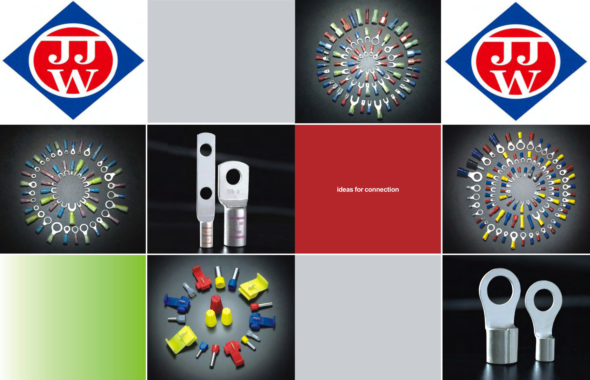

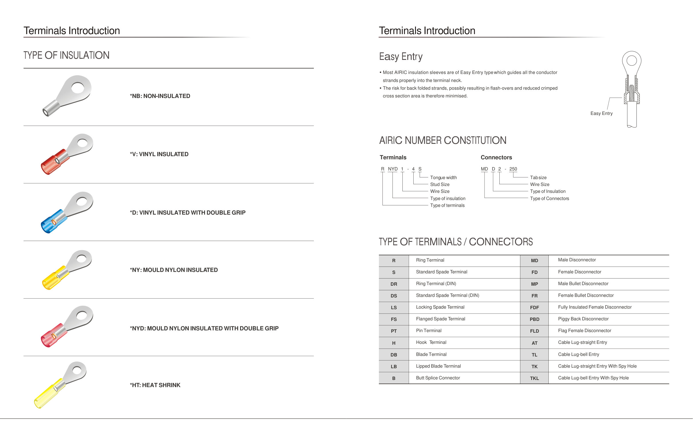
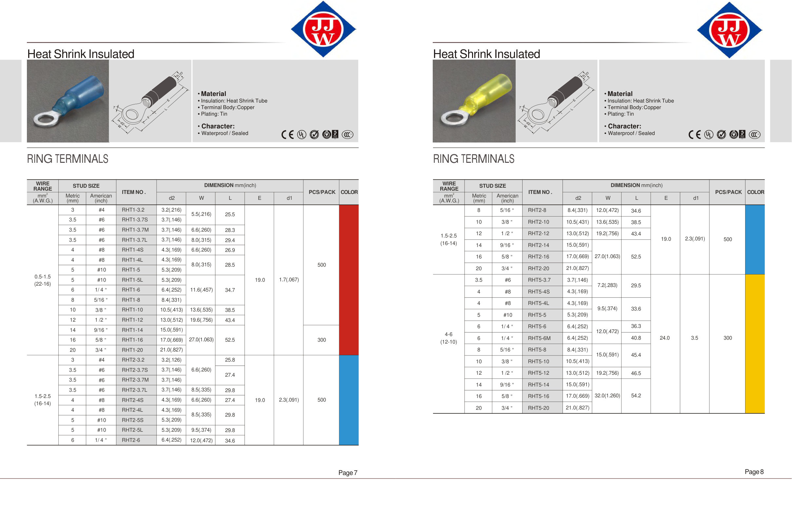
Available Types
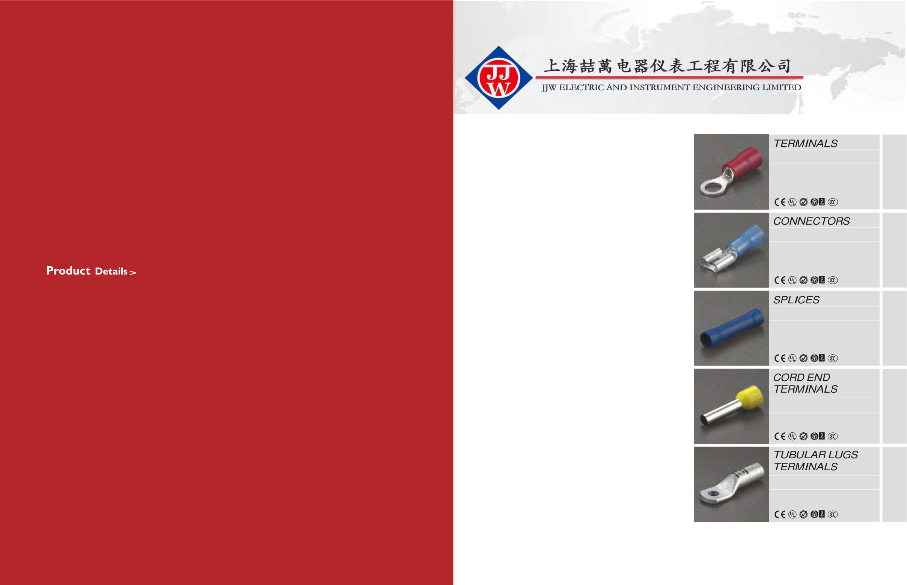

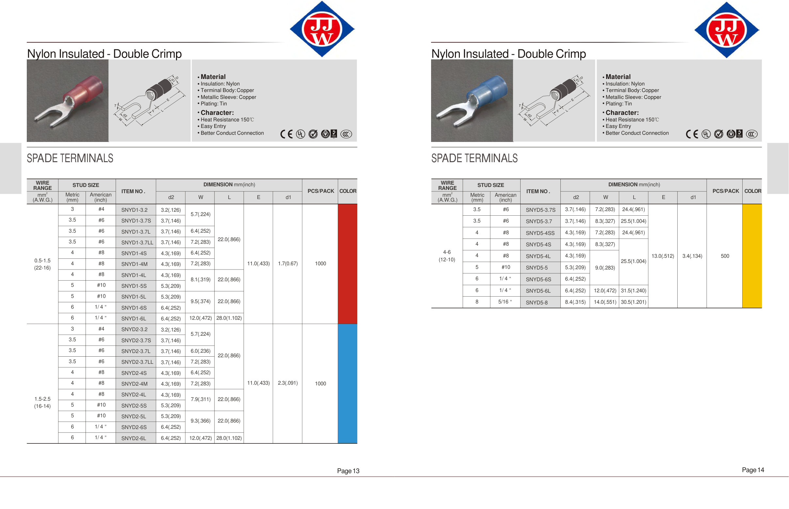
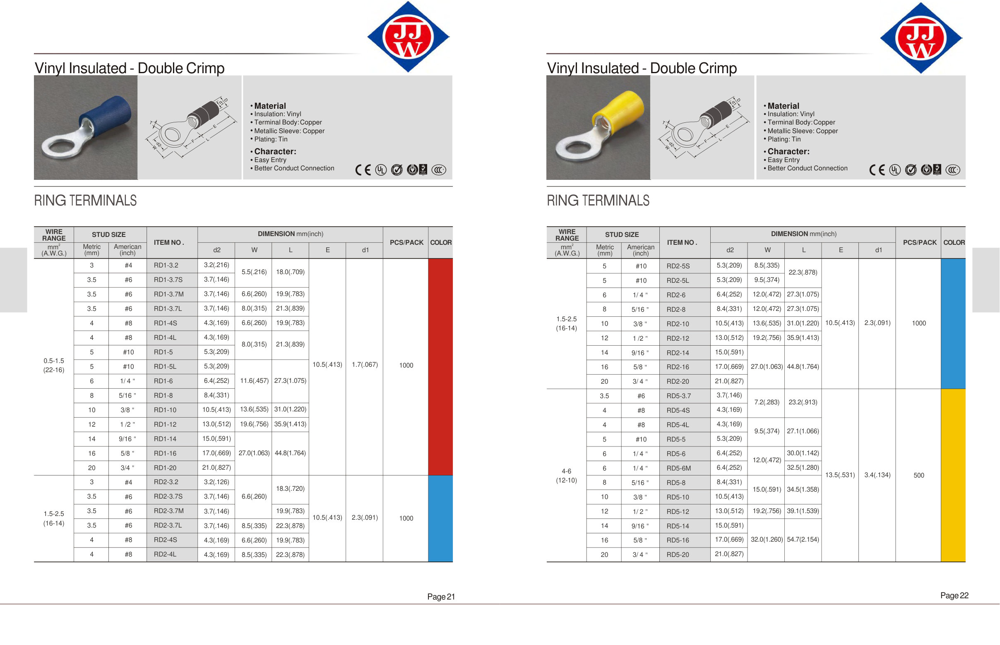
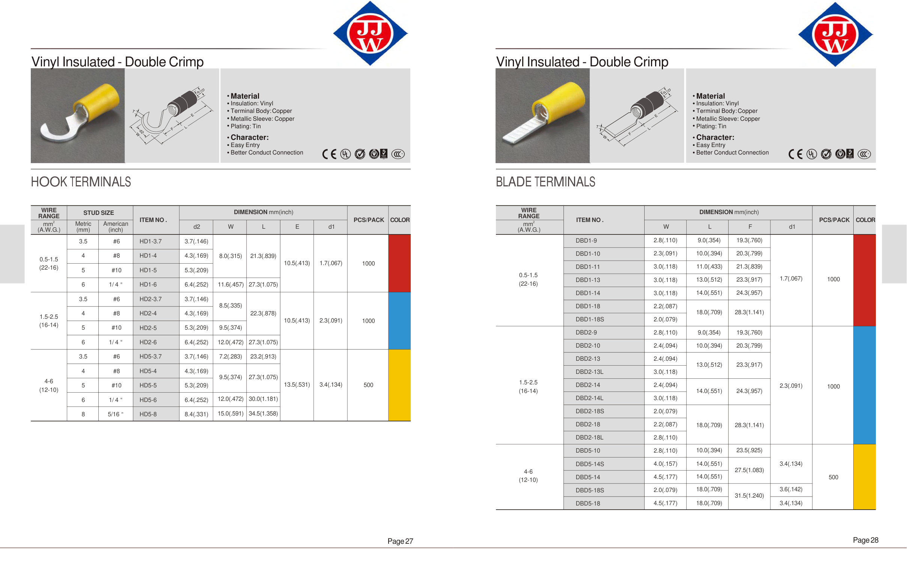
Detailed Selection Guide
Our terminal lugs and connectors are made from high-purity copper with tin plating, offering excellent conductivity and corrosion resistance. The range includes ring, spade, pin terminals, quick-connect disconnectors, butt splices and tubular lugs, with vinyl, nylon, heat shrink and non-insulated options to meet various electrical connection requirements. Compliant with UL, CSA, CE and other international standards.
Ring Terminal
Ring terminals are bolted connections providing the most reliable connection. Available in vinyl single crimp, vinyl double crimp, nylon single crimp, nylon double crimp, heat shrink and non-insulated versions. Wire range 0.5-325mm², stud size #2 to 15/16 inch.
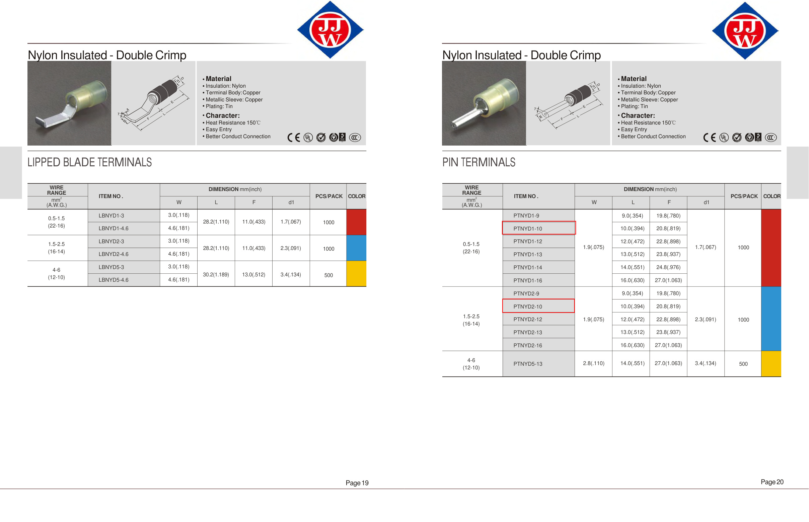
Spade Terminal
Spade terminals allow easy installation and removal without fully removing the bolt. Ideal for applications requiring frequent maintenance. Includes standard spade, locking spade and flange spade types with various insulation options.
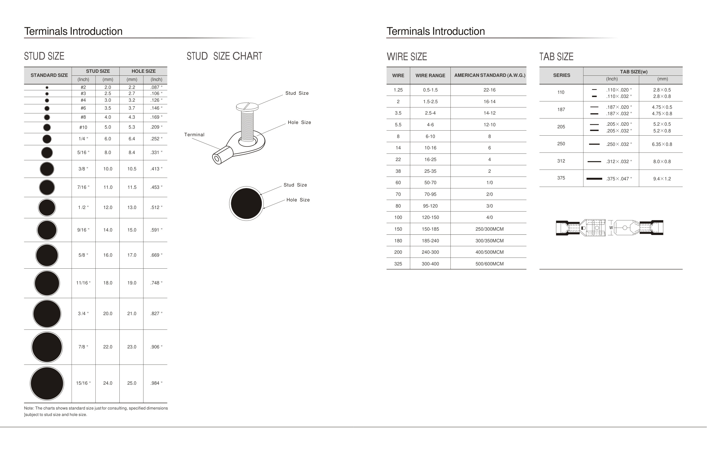
Non-Insulated Ring Terminal
Non-insulated ring terminals feature brazed seam construction for rugged durability. Ideal for high temperature environments and applications where insulation is not required. Wire range 0.5-325mm², preferred for high current applications.
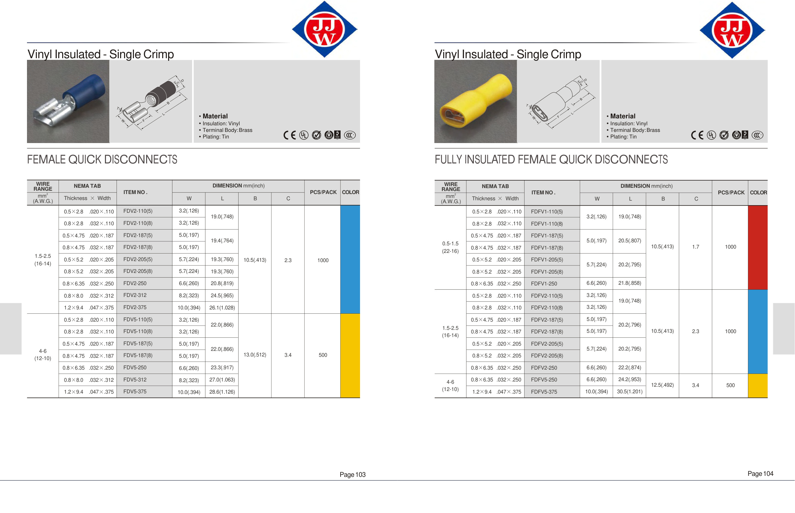
Pin Terminal
Pin terminals are designed for plug-in connections such as terminal blocks and distribution boards. Available in vinyl and nylon insulation. Wire range 0.2-95mm².
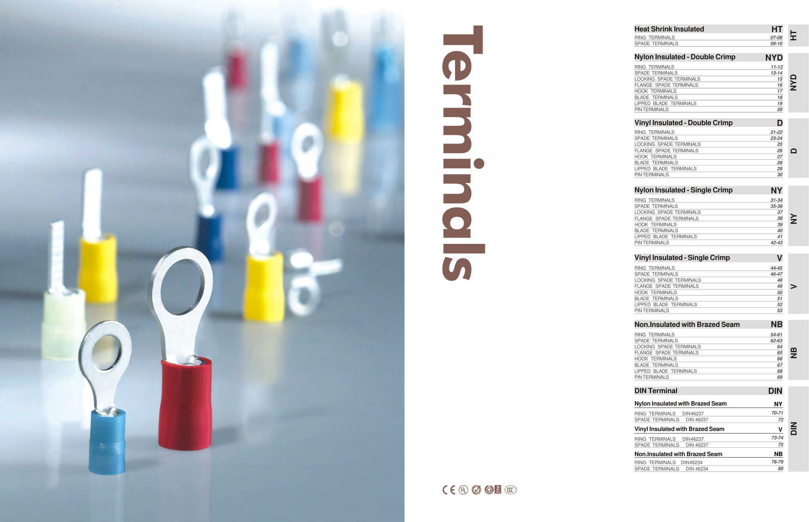
Disconnectors
The disconnector range includes male (MD), female (FD), male bullet (MP), female bullet (FR), piggyback (PBD) and flag (FLD) types. Quick connect/disconnect for easy installation.
Butt Splice
Butt splices are used for in-line conductor connections. Available in insulated and non-insulated versions. Heat shrink splices offer waterproof sealing for outdoor and humid environments.
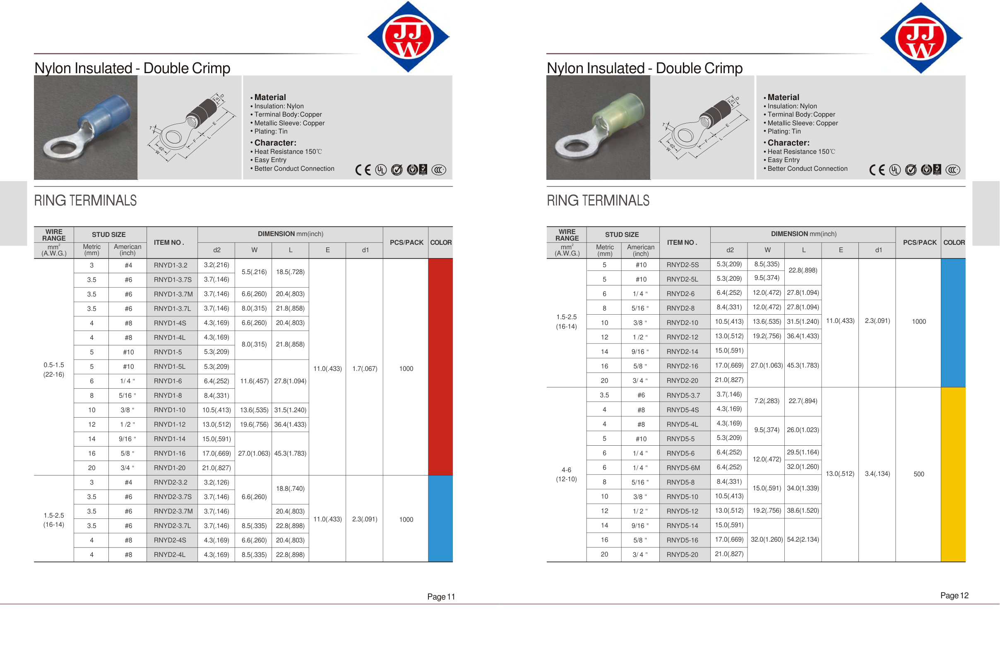
Selection Steps
Identify Wire Size
Determine the conductor cross-section (AWG or mm²) to select matching terminal size. Refer to wire size chart.
Determine Stud Size
Check the stud hole diameter to ensure compatibility with mounting bolt.
Choose Insulation Type
Select PVC insulated, heat shrink or non-insulated based on application environment.
Crimping Process
Use matching crimping dies to ensure crimp quality meets standard requirements.
Need Terminal Lugs & Connectors for your project? Send us your specifications for a quote.
Request Quote Contact Us →